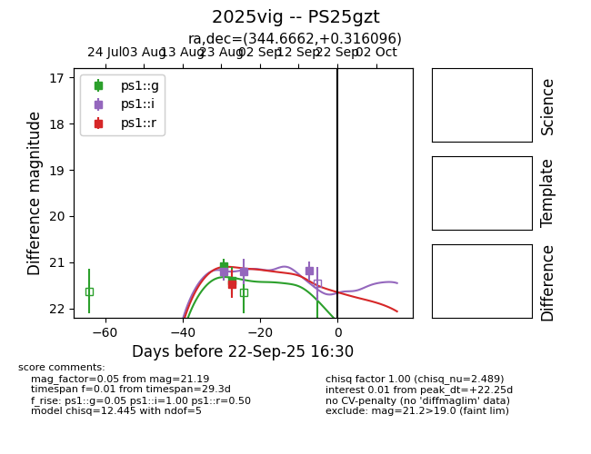
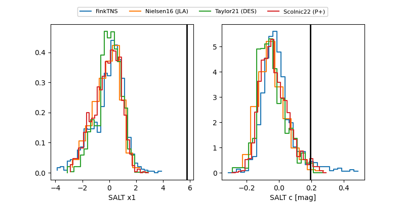

TNS: 2025vig
YSE: 2025vig
2025vig (yse,tns)
PS25gzt (panstarrs)
equatorial (ra, dec) = (344.6662,+0.31610)
galactic (l, b) = (73.6617,-51.43224)


last ps1::g=21.39, ps1::i=21.19, ps1::r=21.47
2 ps1::g, 3 ps1::i, 1 ps1::r detections